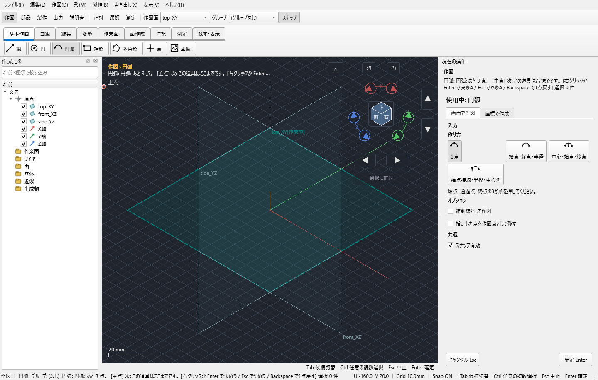
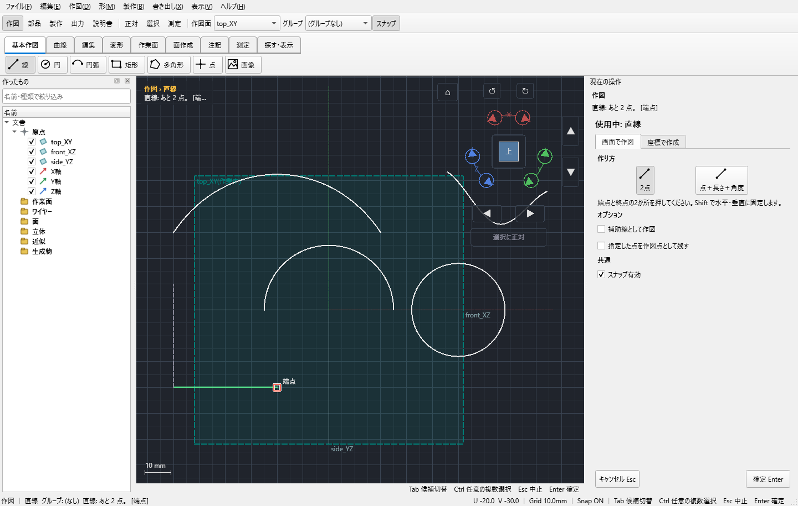

幅20・高さ10mmの閉じた矩形を作る
面や箱、配列の元になる練習用輪郭です。線4本をばらばらに描く方法と、矩形1ワイヤーを作る方法は選択範囲が違います。この手順では1ワイヤーを作ります。
未保存の原本で試さず、KCD2を別名保存して練習してください。
1 XY面を正面から見る
上部の作図面をtop_XYにし、「正対」を押します。平面内作図にします。
ここまでで：幅と高さをその平面の横・縦として入力できます。
2 始点の基準を準備する
原点が見える場合は原点へスナップします。見えない場合は「指定座標の図形」の手順で(0,0)を端点とする補助直線を作ります。
ここまでで：始点位置を既知の点にできます。
3 矩形を選ぶ
「作図 → 基本作図 → 矩形」を押し、始点(0,0)をクリックします。マウスを右上へ動かします。
ここまでで：未確定の矩形と幅・高さの入力欄が出ます。
4 幅と高さを入力する
カーソル入力の幅に20、高さに10を入れます。Tabで欄を移り、値と伸びる側を見てからEnterで終点を確定します。
ここまでで：20×10mmの閉輪郭になります。入力途中の0.25などは最後まで打ってから適用します。
5 全体を選べるか確認する
Vで選択へ戻し、左一覧の新しいワイヤーをクリックします。4辺がひとまとまりで強調されることを見ます。
ここまでで：3Dで一辺だけをクリックした状態と区別できます。
6 面にする前に閉じ方を見る
拡大して4隅が連続していることを確かめます。表示が重なるだけの別平面の線を混ぜないようにします。
ここまでで：面積200mm²の平面領域として扱える入力です。
画面の参考

